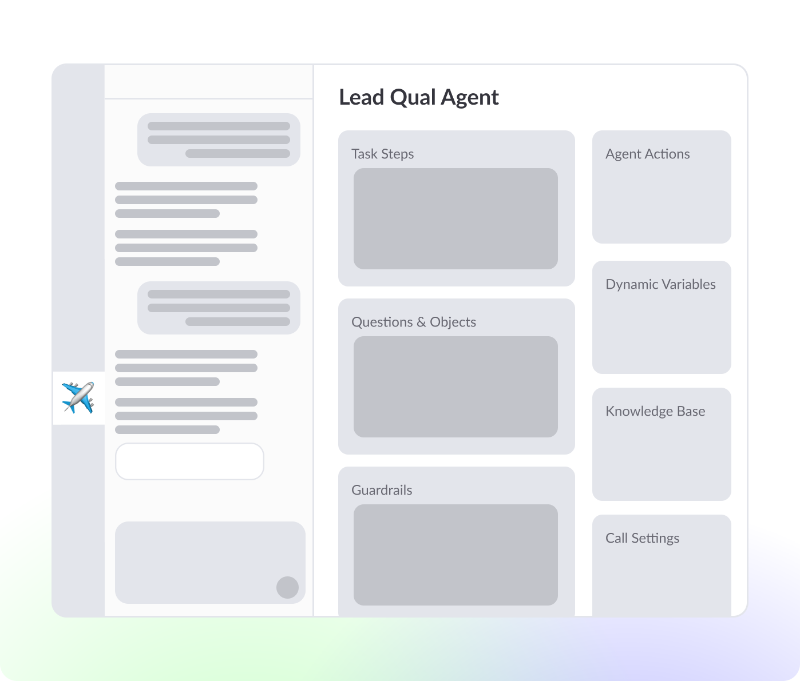
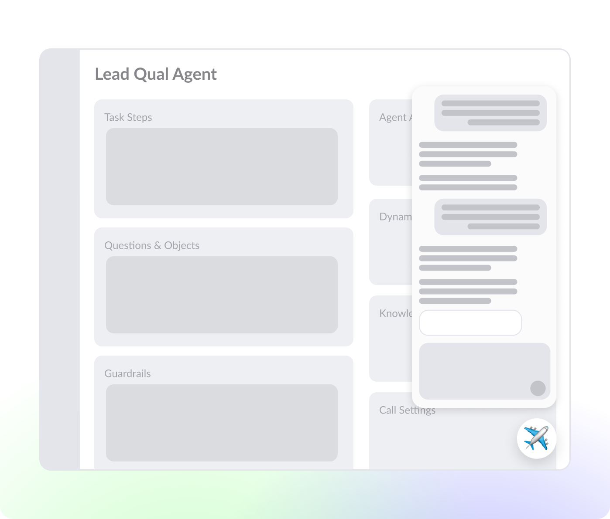

We have the MVP — Now What?
The Problem
A couple weeks after the MVP launched, the data looked promising:
Users
165
Across 73 brands
Sessions
680
Total sessions
Output
170
Tests generated
The MVP validated demand; however; adoption and intent resolution remained below target:
| Metric |
Current |
Goal |
| Weekly Active Usage |
18% |
90% |
| Intent Resolution |
70% |
90% |
With adoption and intent resolution rates far from target goals, what would be the next highest impact investment to close that gap?
After presenting ideas informed by competitive analysis at the kickoff of this project, the CTO, PM, and I aligned on a broader vision for Copilot: an agentic layer that could both collaborate with users in a dedicated workspace and surface throughout the platform contextually. Two directions emerged:
01
Workbench
A dedicated environment where users and Copilot could build, test, and iterate together.

02
Widget
An embedded experience that could surface throughout Regal to provide contextual assistance inside existing workflows.

Due to resource constraints, both ideas could not be pursued simultaneously. The core strategic question became:
Should we improve Copilot's visibility throughout the app or create a dedicated collaborative experience where users can work with Copilot?
Investing in the Widget would be a discoverability bet and investing in Workbench would be a workflow bet. I had a hunch that the Workbench represented a higher-leverage investment.
Hypothesis
I believed that adoption was being constrained less by discoverability and more by workflow fragmentation, therefore improving visibility alone would not meaningfully increase adoption or intent resolution. To validate that assumption, I needed to understand not only what users preferred but what would actually increase adoption and intent resolution.